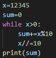

Final Project: tryPy
Spring 2022 • CS 403
Language used: Python3
Group Information
| Name | CWID | Email Address | Time Spent |
|---|---|---|---|
| Cara Cannarozzi | 11970792 | cacannarozzi@crimson.ua.edu | 21 hours |
| Madeline Moore | 11884126 | mcmoore11@crimson.ua.edu | 21 hours |
| Peter Zhang | 11861641 | pwzhang@crimson.ua.edu | 22 hours |
Task Distribution
| Task | Percentage of Task | ||
|---|---|---|---|
| Cara Cannarozzi | Madeline Moore | Peter Zhang | |
| Presentation | 33.33% | 33.33% | 33.33% |
| Justification | 33.33% | 33.33% | 33.33% |
| Grammar | 33.33% | 33.33% | 33.33% |
| Examples | 33.33% | 33.33% | 33.33% |
| Implementation | 33.33% | 33.33% | 33.33% |
Project Information
The name tryPy is pronounced tri-pee (International Phonetic Alphabet: tɹɪpi)
This is a picture of our logo:
References
The following presentations were references to generate the grammar for tryPy:
Block-based syntax from
context-free grammars
Getting grammars into shape for
block-based editors
The following sites were used while creating the implementation of tryPy:
Python3 documentation
Pygame documentation
Pygame tutorial by
DR0ID
Presentation
Although we have included a "Presentation" tab in our manual, please note that the manual itself is a presentation of tryPy. In this tab, there is additional information about what we would like to see with tryPy moving forward, specifics on the bugs currently found in the implementation, videos of tryPy's execution, and any other information about tryPy that we found relevant to its presentation that didn't quite fit in any of the other sections.
Group Photo
Demo Videos
Example 21 being built, printed, and run
Resetting tryPy after the example
Moving Forward
As this implementation of tryPy is quite rudimentary, we have many goals for the language moving forward. We aim to improve the user experience of tryPy in addition to the functionality of it.
Some of the user experience/quality of life improvements we would like to implement in the future include:
- A customizable user interface that would allow users to have a layout that works best for them, some of these customizations include: customizable font, font size, block size, and the positioning of starting blocks
- Changes to the user interface that would make tryPy more visually appealing, especially to children
- Copy and pasting blocks
- A way to save, load, and share projects
- Color blind modes
- Optimizations to rendering to improve battery usage while using tryPy
- Allowing the snap ranges of blocks to be changed based on the user's liking
- Snapping sound effect for when blocks are snapped
Some of the functional improvements and functionality we would like to implement in the future include:
- Allowing tryPy to better handle strings and string manipulation (blocks for string methods)
- Allowing tryPy to better handle lists (blocks for list methods)
- Adding blocks for function which in turn allows recursion and other functional features of the language
- Overall growth in complexity of what tryPy can handle
- An instructional guide appearing on start with an option to participate in a walkthrough tutorial showing the features of tryPy
- Two modes: one where there are various challenges and you must complete one challenge to pass to the next, and one for a tryPy "playground" where the user is able to code freely
- In the challenge mode, set goals such as lines of code or iterations through a loop used to complete a challenge and allow for the user to request hints
- Adding a block generator rather than just having a hardcoded amount of blocks
- A way to view the output of code in the user interface, right now it is printed to the python console
- A way to transform blocks to actual python code in the user interface, allowing cross-platform editing, right now it can be transformed but only viewed in the terminal
- Make a lesson plan and documentation to assist teachers in using tryPy in the classroom
Some bugs/problems we would like to fix in the future include:
- Nested snapping can break blocks in some cases, needs more investigation
- Blocks can get disconnected from start when clicking a text box (type text before adding block)
- Handling any case of blocks being added
- Errors from bad block syntax are not handled right now
Justification
Our goal for this language is simple: create an accessible, visually based language that can be easily used by elementary and early middle school students while displaying more of the actual syntax of a typed programming language (in our case, Python). Most block coding languages, like Scratch, have more simplistic syntax on the blocks, writing commands in English rather than allowing the student to see the language behind the blocks. These traditional block coding languages certainly have merit. They are a great way to get students excited about the field of computer science and introduce the problem-solving skills that are important to programming. However, the jump from block coding to typing code can be quite jarring. The intent of tryPy is to provide a more student-oriented transition to typing code by combining the easy-to-conceptualize blocks with typed Python.
We chose Python as the language for our intermediate blocks due to its wide usage and simple syntax. Since the code will appear in blocks, it makes the most sense to first implement intermediate block coding using a language with an easier-to-visualize syntax than other languages like C. Additionally, since Python is so widely used, it is a skill that will be applicable in a variety of fields. Students will receive exposure to Python from a young age which will improve fluency later in life. Like with any spoken language, it is easier to learn a language if you begin young and tryPy is a great way to introduce Python early.
To gather more information about the potential utility of such a language, we interviewed an elementary school teacher, who will be referred to as Mrs. C. Mrs. C uses block coding to introduce computer science concepts to her students and participates in Hour of Code with third, fourth, and fifth graders each year. In our interview, we asked questions regarding the utility of block coding as it is being used in the classroom now, the usefulness of introducing computer science concepts to students at a young age, and the potential utility of an intermediate block language such as tryPy.
Our first questions to Mrs. C were regarding block coding as it is currently implemented. Mrs. C uses Hour of Code to reach students outside of her own classroom, so to share insight on the largest sample size, many of her responses were surrounding Hour of Code over the past 3 years. Mrs. C primarily focused on two activities with students during Hour of Code. Of the two activities, one was geared toward the younger students (third and fourth graders) and the other was geared toward the older students (fourth graders with previous coding experience and fifth graders). Mrs. C noted that between the two activities, despite being in the same block language, there were certain differences in how you need to connect blocks to complete the tasks. She said this caused some confusion in students who had done both options. Other than the difference in the syntax in the two activities, Mrs. C thought the blocks were a great way to introduce programming to the students. There was an option to see the code behind what the blocks were doing, which was too great of a jump from the blocks for students to fully understand what the code did but was interesting feedback on current implementation of blocks.
Our next questions to Mrs. C were regarding block coding and the introduction of computer science concepts to young students. In her opinion, block coding is a good introduction to computer science and has certainly inspired an increased interest in computer science within her students. She even mentioned that some teachers now use block coding projects as a reward for students if they complete other classwork early since the students enjoy it so much. When asked about the skills that block coding has helped her students, learn, Mrs. C said that outside of computer and coding skills, participating in Hour of Code and otherwise using block coding has helped teach her students about perseverance and the importance of trying different solutions to solving a problem. She also noted that it helps students learn about problem solving skills that apply to other fields academically and outside of the classroom.
We closed out our interview with Ms. C by asking about the utility of an intermediate block programming language. We explained the concept of tryPy and its visualization of code that is syntactically similar to Python. She was interested in the concept and agreed that it would be most useful as a “half-step” from pure block coding to fully typed coding. She said that from her experience, students should still start out with a pure block language, like Scratch, and then move into an intermediate block language such as tryPy in fifth grade (if they have sufficient block coding experience) or middle school. With the increased realism of tryPy, students would be able to more easily transition from blocks to typing, and the retention of interest between elementary, middle, and high school would increase.
Our new language, tryPy has the potential to revolutionize the way computer science is taught to young students. It would bridge the gap between purely block coding and purely typed coding, making the transition smoother for students who start working with blocks and maintaining students’ interest in computer science throughout their elementary and middle school years. Through an interview with a teacher who currently uses block coding in her classroom, we have verified these ideas from an educator’s point of view. tryPy increases the accessibility of computer science to students in elementary school while also maintaining interest in computer science as students continue with their education.
Grammar
Examples
| Example and Task | Python Code | tryPy Code | Result |
|---|---|---|---|
| example 1 task: add up all numbers from 1 to 100. try to do this using by going through a loop only 50 times! |
 |
||
| example 2 task: check if a number is even or odd. print "odd" if the number is odd or "even" if the number is even |
|||
| example 3 task: use the base and height of a triangle to calculate its area |
|||
| example 4 task: using the diameter of a circle, calculate its circumference and its area (use 3.14 for pi) |
 |
||
| example 5 task: using a number of your choice, print out all non-negative numbers leading up to it |
|||
| example 6 task: using two numbers (a coefficient and an exponent), print the coefficient to the power of the exponent |
 |
||
| example 7 task: print the absolute value of a number |
|||
| example 8 task: print the difference between a given number and 21, if the number is greater than 21 print double the absolute difference |
|||
| example 9 task: use a number and a range to check if the number is within the range of 5000 (inclusive). print "yes!" if it is or "no" if it isn't |
 |
||
| example 10 task: print the sum of two numbers, but if the numbers are equal, print 0 |
|||
| example 11 task: print the square of the sum of two numbers (x+y)^2 |
|||
| example 12 task: print the sum of all digits from an integer (ex. 12345 will output 15) |
 |  |
|
| example 13 task: print the future value of a specified principal amount, rate of interest, and a number of years. don't worry about rounding |
|||
| example 14 task: convert a length in feet and inches to centimeters using inch to centimeter conversion of 2.54 cm/in |
|||
| example 15 task: check if all digits of an integer are the same (print "all the same" if they are, "at least one difference" if not) |
|||
| example 16 task: remove and print every third digit from an integer (start from end, move to beginning) |
|||
| example 17 task: count the number of times a specified digit appears in an integer |
|||
| example 18 task: check if three lengths form a valid triangle (print "could be a triangle" if yes, "no triangle here" if no) |
|||
| example 19 task: print the absolute value of the difference between the first digit and last digit of an integer |
|||
| example 20 task: from two integers, print the sum of all values between the two numbers (not inclusive) |
 |
||
| example 21 task: check if each digit in an integer is increasing or staying the same. if there is any decreasing, print "at least one decrease found". otherwise print "all increasing or staying the same" |
|||
| example 22 task: print the sum of all squares of all digits in an integer (ex. 123=1^2+2^2+3^2=14) |
Implementation
To implement this code we first created our blocks. We made a base block class which has all the base properties of a block, such as dimensions, color, rendering method, and movement. Then all of our other blocks inherit from the base block and have their own additional properties and methods as needed. In order to handle the actual interpreting of blocks, we made a block manager. This class handles all of the tracking of blocks, how they snap together, and also interprets the block code. In order to interpret the code the block manager keeps track of every block connected to the start block. When the "s" key is pressed the block manager will tokenize the blocks into a string of python code then creates a code object using that string. The code object is then executed and the result is printed to the console. When the "r" key is pressed, all blocks are reset to the original selection menu.
Requirements
This project has a few requirements. They are listed below.
Running tryPy
To run tryPy, type the following into the command line while in the main directory:
$ python3 main.py
Make sure you have installed all of the requirements before running!
Using tryPy
Once you have a tryPy window open and running, the world is your oyster! To use tryPy, you MUST start with a "start" block. This is what tells the interpreter where to look for code. To add code, simply drag blocks from the selection menu and connect them to each other.
To connect blocks, bring the block to the middle of the block you want to connect it to. In loops and conditional statements, to add blocks outside of the loop or condition, bring the block to the left of the block you want to connect it to. If you want to add text to a block, make sure you add it BEFORE you connect it to another block.
To run your tryPy code, click out of any text box you may be in and hit the "s" key. This will run your code and output it to the terminal. Did you make a mistake and want to restart? No worries! Just hit the "r" key (as long as you're out of any text box) and all of your blocks will be reset! Do you want to see the Python equivalent of your tryPy code? Just press "p" and the Python code will output to the terminal!
If you're a visual learner, check out the videos in the Presentation tab!
Note on Implementation
Our implementation functions as a proof of concept for tryPy. While the implementation fulfils the basic requirements of tryPy, there are still some bugs that would be squashed with more time.